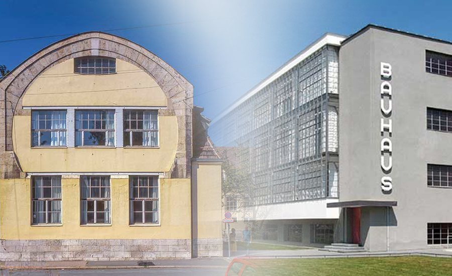
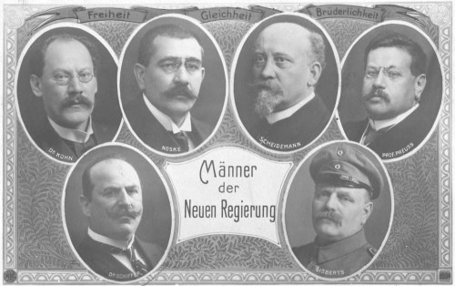

Program
I appreciate the vocabulary that is utilized in the "Manifesto of the Bauhaus". The term "Program" resonates and pulls me into a feeling of comfort and of the presence of a plan as opposed to a distinct set of rules and opinions.
The Bauhaus' focus on functionality and the process of forming a simple design around what one may think to be the "most" functional form allows the artist to become a creator of a different sort. Simple calculation, based on logic is meant to become the aestheic. This is beauty, in my opinion, though beauty may be seen in many ways; none of which are subjective to the ends of an entity such a mathematical law. By indicating functionality as the primary goal, the designer, artist, or artisian will be provided with the opportunity to explore the aesthetic as a means of facilitating function; this is a key concept that appears in all forms of design to some extent. This ideaology seems especially significant with regard to disciplines such as user interface or experience design.
of the
STAATLICHE BAUHAUS
Bauhaus was an influential art and design movement that began in 1919 in Weimar, Germany. The movement encouraged teachers and students to pursue their crafts together in design studios and workshops. The school moved to Dessau in 1925 and then to Berlin in 1932, after which Bauhaus—under constant harassment by the Nazis—finally closed.
The Bauhaus movement championed a geometric, abstract style featuring little sentiment or emotion and no historical nods, and its aesthetic continues to influence architects, designers and artists.
in Weimar
The Weimar Republic was created at a time of confusion and chaos after Germany had lost World War One. People were starving, the Kaiser had fled and the new Republic got off to a troubled start for two reasons:
Many Germans hated the government for signing the armistice in November 1918 - they called them the November criminals. The defeat in the war came as a huge surprise to the German people, and many ordinary German soldiers, which led to a theory that the brave German army had been "stabbed in the back" by the politicians.
In early 1919 the victorious Allies met to discuss how to punish Germany and on 28 June 1919 the new German government was forced to sign a peace settlement called the Treaty of Versailles. The treaty punished Germany militarily, territorially and financially. Many Germans felt their country had received a very harsh deal in the treaty and resented the government for agreeing to its conditions. However, German government had been given an ultimatum - sign within five days or risk invasion.
Walter Gropius
One of the most highly regarded architects of the 20th century, Walter Gropius (18 May 1883 ‐ 5 July 1969) was one of the founding
fathers of Modernism, and the founder of the Bauhaus, the German "School of Building" that embraced elements of art, architecture, graphic design, interior design, industrial design, and typography in its design, development and production.
Like
many modernists of the period, Gropius was interested in the mechanization of work and the utilitarianism of newly developed factories. In 1908, he joined the studio of renowned German architect and industrial designer Peter Behrens,
where he worked alongside two people who would also later become notable modernist architects: Le Corbusier and Mies van der Rohe.
However, of the three young architects at Behren's practice, Gropius was the first to put
his Modernist ideas to work. In 1911, he and Adolf Meyer designed the Fagus Factory, a glass and steel cubic building which pioneered modern architectural devices such as glass curtain walls, and was built from the floor plans of the
more traditional industrial architect Eduard Werner.
In 1919, Gropius took over as master of the Grand-Ducal Saxon School of Arts and Crafts in Weimar, promptly turning it into The Bauhaus. From then until 1933, the school
was one of Europe's most progressive and influential schools of design, greatly influencing the current of modern art and architecture. The Bauhaus in Dessau was designed in 1925 by Gropius, who distilled his teachings into architectural
elements of the building.
Gropius also contributed with published writings, discussing the Bauhaus Manifesto, the role of the artist, and the artist's relationship to his or her work. After emigrating to the United States,
Gropius continued his teachings and exploring the Bauhaus ideal. While teaching at Harvard University, he lived with his family in the self-designed Gropius House.
- Before his stroke, President Wilson actively supported the ratification of the Treaty of Versailles. The Senate rejected the treaty anyway.
- The 18th Amendment was ratified, authorizing Prohibition, even against President Wilson's veto.
- The League of Nations was established in order to resolve international disputes.
- 26 politically motivated strikes and uprisings occured.
- Germany, Luxembourg, and the Netherlands gave women the right to vote.
- US Congress approved the 19th Amendment to legalize women's suffrage.
- The Polish-Soviet War began.
- The beginning Egyptian Revolution and the continuation of the Mexican Revolution.
- The conclusion of World War I with the Treaty of Versailles in June.
- Russia's Civil War began at the end of 1917 and continued into 1919.
- The 1918 influenza pandemic carried on into 1919, killing between 50 and 100 million people worldwide.
- The first public radio station in North America went on air.
- Several firsts for transatlantic flight occurred.
- The Bauhaus was founded in 1919 in the city of Weimar by German architect Walter Gropius
The ultimate goal of all art
Though all words are clearly defined by language systems, I do feel that some may be, to some extent, left to interpretation. My opinion is that this is true of the word art. I feel that the definition of this term can take many forms and mean many things to different people.
Art, as I see it, is meant to be an expression of one’s self. It can be a means of emotional release, self expression, or simply created to gain the opportunity to experience its creation. I think of design very differently. While I do see design as an expression, it is not meant to be an expression of personal ideology, but rather an expression of the idea of another rendered as a communicative tool. I believe that both are necessary parts of culture or even life.
I do not necessarily feel that “the ultimate goal of all art is the building”, art does not need a building to exist. It does not even need to be manifested into a tangible form, it could simply be an idea that exists only within the mind of the artist.
is the building! The ornamentation
Some Text of the building was once the main purpose of the visual arts,
and they were considered indispensable parts of the great building. Today, they exist in complacent isolation, from which they can only be salvaged by the purposeful and cooperative endeavours of all artisans. Architects, painters and
sculptors must learn a new way of seeing and understanding the composite character of the building, both as a totality and in terms of its parts. Their work will then re-imbue itself with the spirit of architecture, which it lost in salon
art.
The art schools of old were incapable of producing this unity—and how could they, for art may not be taught. They must return to the workshop. This world of mere drawing and painting of draughtsmen and applied artists must at long last become a world that builds. When a young person who senses within himself a love for creative endeavour begins his career, as in the past, by learning a trade, the unproductive “artist” will no longer be condemned to the imperfect practice of art because his skill is now preserved in craftsmanship, where he may achieve excellence.
Architects, sculptors, painters—we all must return to craftsmanship! For there is no such thing as “art by profession.” There is no essential difference between the artist and the artisan. The artist is an exalted artisan. Merciful heaven, in rare moments of illumination beyond man's will, may allow art to blossom from the work of his hand, but the foundations of proficiency are indispensable to every artist. This is the original source of creative design.
So let us therefore create a new guild of craftsmen, free of the divisive class pretensions that endeavoured to raise a prideful barrier between craftsmen and artists! Let us strive for, conceive and create the new building of the future that will unite every discipline, architecture and sculpture and painting, and which will one day rise heavenwards from the million hands of craftsmen as a clear symbol of a new belief to come.